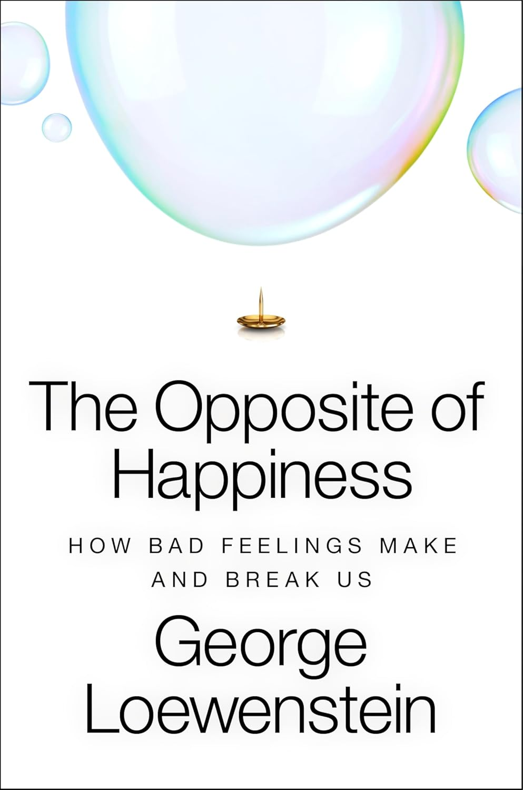
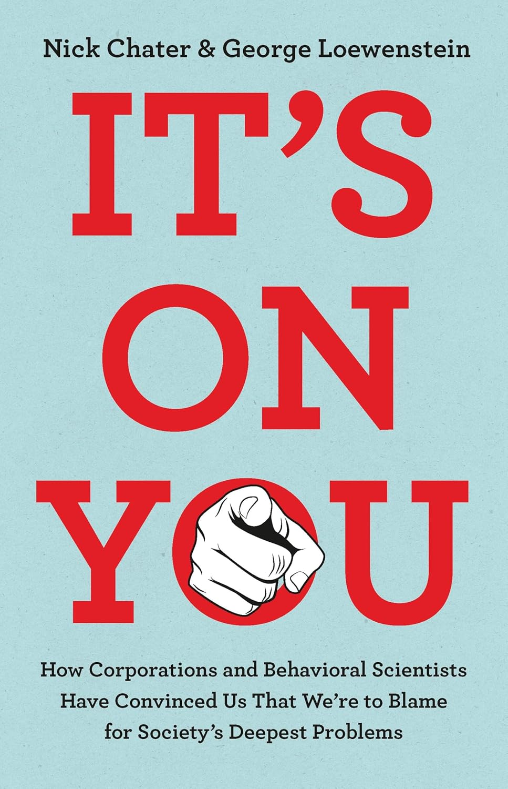

Books
Selected Titles

The Opposite of Happiness
What does it mean to be miserable—and why does it matter? George Loewenstein draws on decades of behavioral research to explore the psychology of negative emotions, from boredom and regret to envy and grief.

It's On You
A critique of how corporations and policymakers use behavioral science to shift responsibility onto individuals—and what we can do about it.